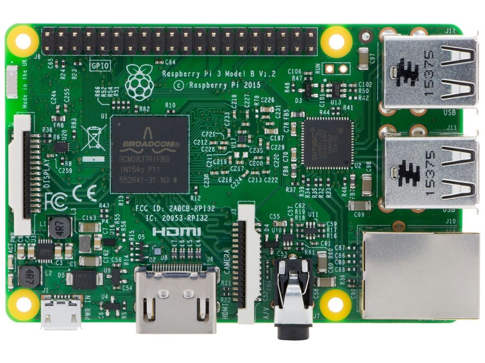
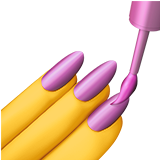
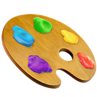
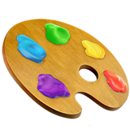

Creating Art
with a Raspberry Pi
Adventures in trying out hardware, code, and having fun in a personal project
Stephanie Nemeth @stephaniecodes
Me:
6 months ago
So I visited an art museum.
Stedelijk Museum
Jean Tinguely
http://www.flickriver.com/photos/46774986@N02/17028829322/
“I wanted something ephemeral that would pass like a falling star...
The work had to just transpire, make people dream and talk, and that would be all.“
- Jean Tinguely
What is the role of the artist?
What is the role of the artwork?
What is the role of the viewer?
Can the artist become the viewer?
Can the viewer become the artist?
My mind raced with possibilities.
I was inspired.
I wanted to try to build my own.
What I dreamed of
How would I ever get here?
What skills are necessary to actually build something?
Coding
Artistic Ability
Working with Hardware
Wiring/Soldering
Reality Check
Could probably handle the coding
Reality Check
Not a real artist
Reality Check
No experience with hardware
Am I even capable of this?
I started googling.
Yippee!
Discovered Raspberry Pi has plug & play accessories!
HATS
Hardware Attached on Top
HATS
Easily plugs into your Pi's GPIO
No Soldering or Wiring!

HATS
They have established libraries!
Many kinds of HATs


TEXT
LIGHTS
SENSORS
MUSIC
AUDIO
Oh h*ck,
You can even make fruit drums! 
Adafruit Capacitive Touch HAT: https://www.youtube.com/watch?v=kp3OaLl-OHw
I found one that inspired me.
Unicorn HAT
64-Led Board


I saw Pixel Art


Big Idea
What It should look like
My final project
How did I get there?

Identified my 'Must Haves'
Must-Have #1:
Anyone in the world could interact with the application

Must-Have #2:
Build something with hardware for first time
Must-Have #3:
Users can create artwork with multiple color!
Must-Have #4:
Build with Javascript & React to improve my skills
Identified my 'Must Haves'
Start putting together a toolkit
Toolkit: Hardware
Raspberry Pi + Unicorn HAT
Toolkit: HAT Library
Has an Established Python Library
Toolkit: User Interface
React & React-Native
Optimize for success
Split project goals into very small tasks
“Taking on large tasks, or too many tasks at once, overwhelms us. You’re more likely to follow through if the task is small. Once successful, you can then try a new activity or increase the original task’s complexity.“
- Sabina Nawaz
https://hbr.org/2017/02/break-bad-habits-with-a-simple-checklist
Stuff For This Project


How does it send messages?

Socket.IO
Simplified communication between the clients & Pi ✨
Works on every platform, browser or device 💪
Has client-side libraries for Python and React! 🎉
Lessons Learned: Raspberry Pi
It's really easy to get started building with a Pi!
Lessons Learned: Raspberry Pi
I was intimidated for a long time by Pis and Arduinos.
Ugh, how do I choose?!
Lessons Learned: Raspberry Pi
Recommendation: A Pi starter kit makes starting a breeze.
Lessons Learned: Raspberry Pi
Want to do more than light a single LED but intimidated by soldering or wiring straight away?
Final Thoughts
I had never written any Python or React Native code before this project.
Final Thoughts
I had never built anything using WebSockets or Socket.IO before.
Final Thoughts
I had never written for hardware before.
Final Thoughts
I had never combined so many languages into one project.
Final Thoughts
Despite all these "nevers", I managed to pull off a cool project using a Pi. 
Don't let what you think are your insufficiencies hold you back in tackling the stuff you really wanna build... find a way to optimize for your own success.
Let's demo this thing!!  

Try it out!
Thank you!
Now go create something wonderful.
Slides available at stephanie.lol/codeland-talk
Stephanie Nemeth @stephaniecodes